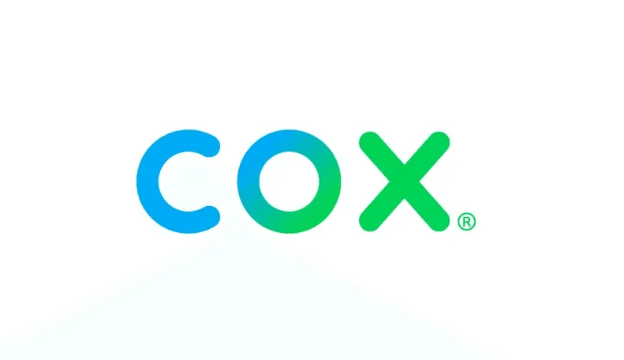

← All work
Overview · Smart building controls
COX SMB
A smart command centre for small and medium businesses to control HVAC, refrigeration and lighting, while preventing costly equipment failures.

The detailed story is on its way
I’m writing up the research, flows and outcomes behind COX SMB. If you’d like a walkthrough in the meantime, I’m happy to share it on a call.